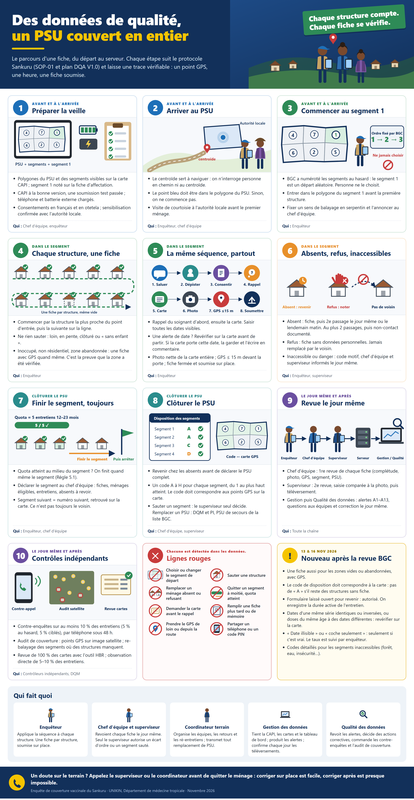
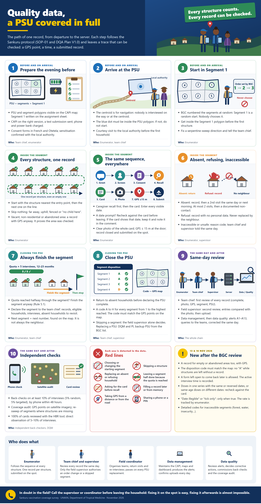
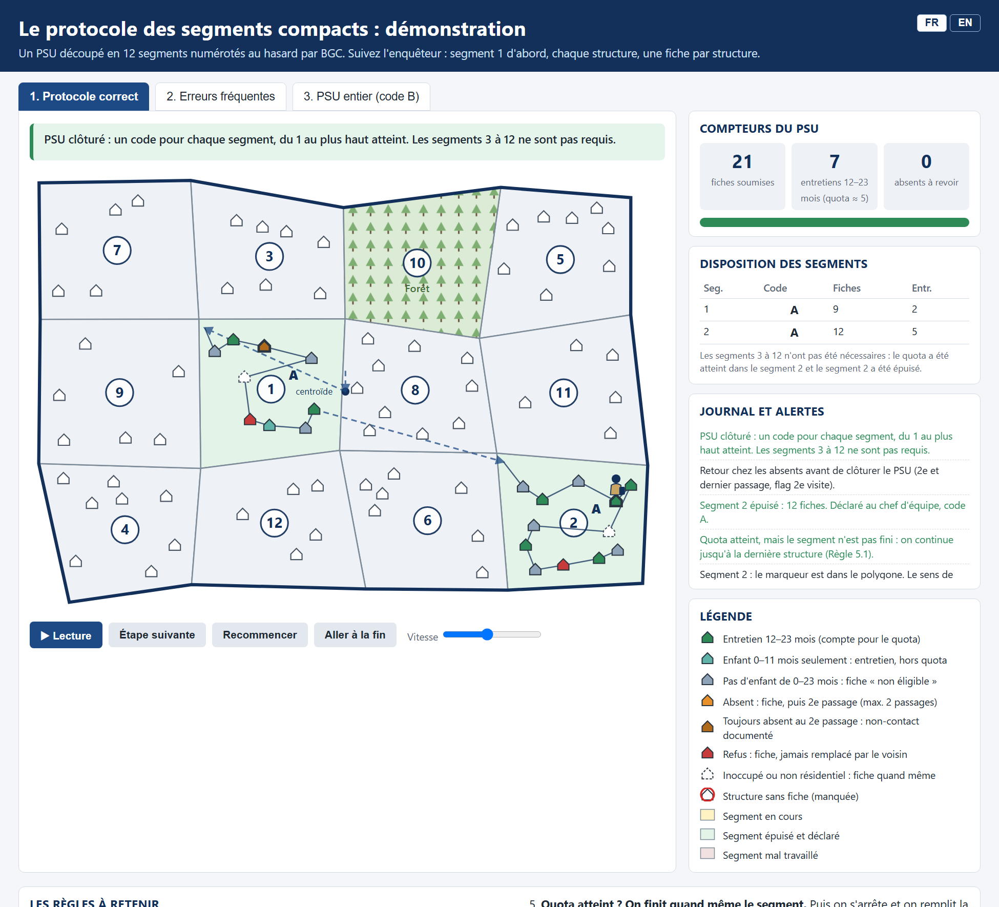
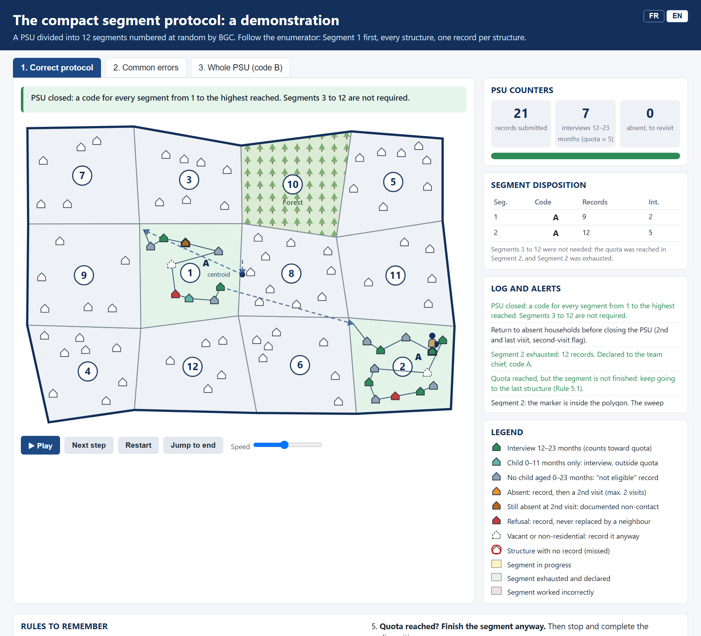
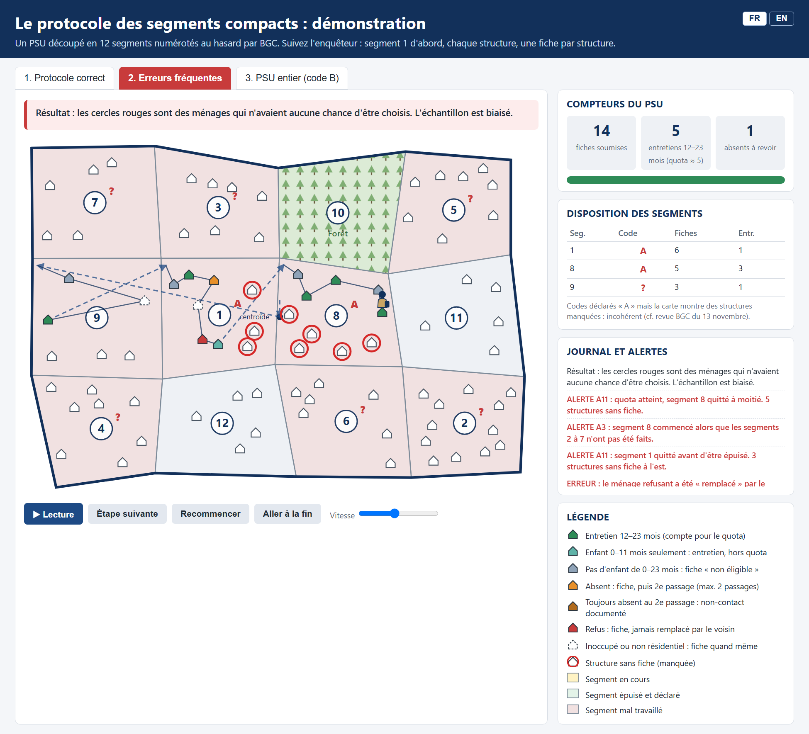
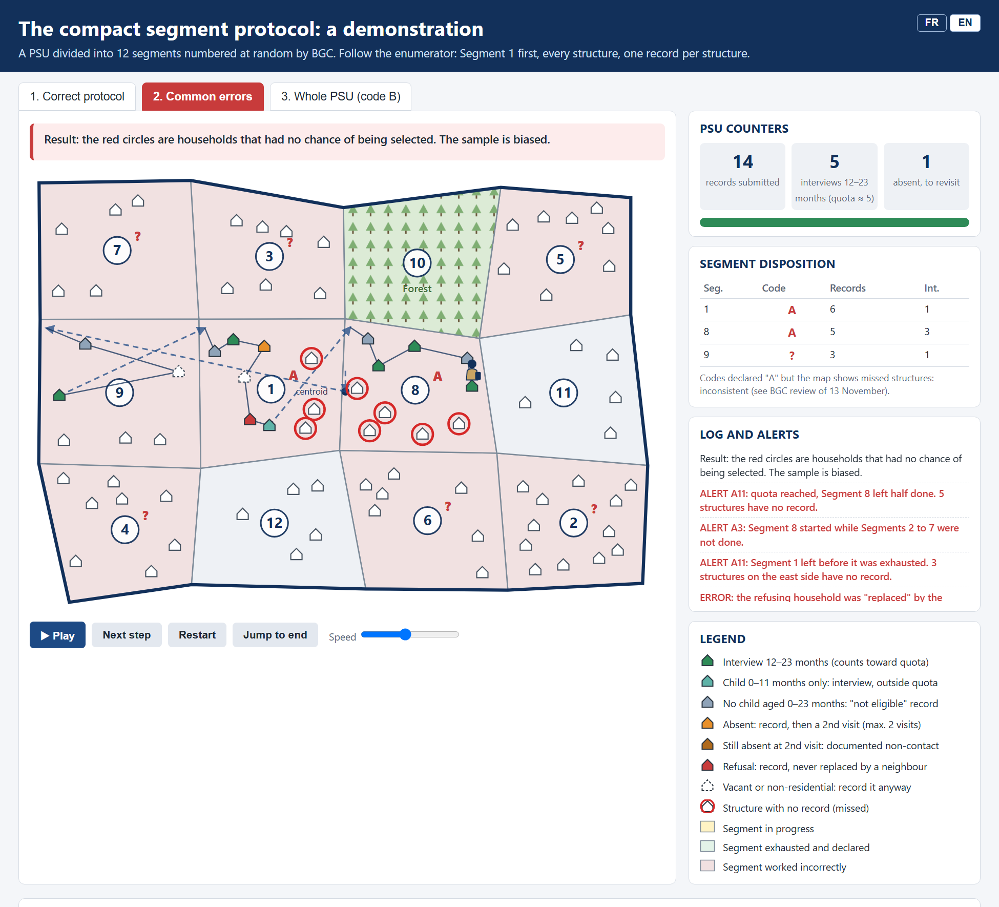

Six messages pour tout le mondeSix messages for everyone
- Le segment 1 d'abord, puis les numéros croissants. BGC a numéroté les segments au hasard. Personne ne choisit où commencer, et le segment suivant est le numéro suivant, pas le plus proche.
- Chaque structure, une fiche. Y compris pas d'enfant éligible, personne à la maison, refus, inoccupé et non résidentiel. Une zone vide ou abandonnée reçoit aussi une fiche avec GPS.
- Finir le segment, même quand le quota est atteint. Le quota (environ 5 entretiens d'enfants de 12–23 mois) ne se vérifie qu'une fois le segment en cours épuisé.
- La fiche se fait devant la structure. Rappel avant la carte, toutes les dates visibles saisies, photo de la carte, GPS de 15 m ou mieux devant la porte, soumission avant de partir.
- Ce qui est écrit doit correspondre à la carte. Codes de disposition, numéros de segment et de PSU sont comparés aux points GPS. Un code qui ne correspond pas à la carte est une erreur, pas un détail.
- Pas de PSU entier hors ordre. Au Sankuru, l'ordre des segments est strict, même dans les petits PSU. Quota non atteint après avoir épuisé tous les segments ? Noter le PSU « épuisé sous le quota » et informer le superviseur.
- Segment 1 first, then ascending numbers. BGC numbered the segments at random. Nobody chooses where to start, and the next segment is the next number, not the nearest one.
- Every structure, one record. Including no eligible child, nobody home, refusal, vacant and non-residential. An empty or abandoned area also gets a record with GPS.
- Finish the segment, even when the quota is reached. The quota (about 5 interviews of children aged 12–23 months) is checked only once the segment in progress is exhausted.
- Records are made at the structure. Recall before card, every visible date entered, card photo, GPS of 15 m or better at the door, submitted before walking on.
- What is written must match the map. Disposition codes, segment numbers and PSU numbers are checked against the GPS points. A code that does not match the map is an error, not a detail.
- No whole-PSU canvassing out of order. In Sankuru the segment order is strict, even in small PSUs. Quota not reached after all segments are exhausted? Record the PSU as exhausted below quota and tell the supervisor.
Pourquoi c'est importantWhy this matters
Les estimations de couverture ne sont valables que si chaque ménage d'un segment travaillé avait la même chance, connue, d'être visité. Une maison sautée, un segment sauté ou un ménage remplacé ne peuvent pas être corrigés par l'analyse.
BGC examine maintenant la carte de tous les points GPS par rapport aux polygones des PSU et des segments. Lors de la revue du 13 novembre, dans un PSU, les segments 4 à 10 avaient été sautés et un côté d'une route n'avait pas été couvert, alors que le formulaire de disposition disait les segments couverts. Nous ne devons pas répéter cela au Sankuru.
GiveWell a demandé combien de temps dure réellement un entretien et pourquoi des segments étaient inaccessibles. Les deux réponses viennent de ce que les équipes enregistrent sur le terrain.
Coverage estimates are only valid if every household in a worked segment had the same, known chance of being visited. A skipped house, a skipped segment or a replaced household cannot be corrected by analysis.
BGC now reviews maps of every GPS point against the PSU and segment polygons. In the review of 13 November, one PSU had segments 4 to 10 skipped and one side of a road left uncovered, while the disposition form said the segments were fully covered. That is the kind of finding we must not repeat in Sankuru.
GiveWell has asked how long an interview really takes and why segments were inaccessible. Both answers come from what the teams record in the field.
Le processus, de la préparation aux contrôles indépendantsThe process, from preparation to independent checks
Dix étapes, les lignes rouges et qui fait quoi. Imprimez l'affiche en A3 ou partagez l'image sur WhatsApp.Ten steps, the red lines and who does what. Print the poster in A3 or share the image on WhatsApp.


Le protocole des segments, démontréThe segment protocol, demonstrated
Un PSU simulé de 12 segments. Choisissez un scénario, puis Lecture ou Étape suivante pour avancer structure par structure et discuter.A simulated PSU of 12 segments. Choose a scenario, then Play or Next step to move one structure at a time and discuss.
Ouvrir la démonstration en plein écranOpen the demonstration full screen




L'ordre des segments est strict au Sankuru (décision du 18 novembre 2026). Pas de parcours du PSU entier hors ordre (code B), même dans les petits PSU. Quota non atteint après tous les segments : PSU « épuisé sous le quota ».Segment order is strict in Sankuru (decision of 18 November 2026). No whole-PSU canvassing out of order (code B), even in small PSUs. Quota not reached after every segment: PSU "exhausted below quota".
Contrôle des dates de la carte, comme dans la CAPICard date checks, as in the CAPI
La CAPI (version 006) compare les dates saisies et affiche un seul écran en fin de carte. Essayez un exemple ou changez une date : l'écran à droite montre ce que l'enquêteur verra.The CAPI (version 006) compares the dates entered and shows one screen at the end of the card. Try an example or change a date: the screen on the right shows what the enumerator will see.
| ÂgeAge | DoseDose | Sur la carteOn the card | Date |
|---|
| ContrôleCheck | Ce qui le déclencheWhat triggers it | Ce que fait l'enquêteurWhat the enumerator does |
|---|---|---|
| Date futureFuture date | Date après le jour de l'entretienDate after the interview day | Bloquant : la date ne peut pas être enregistrée. Revérifier la carte.Blocking: the date cannot be saved. Recheck the card. |
| Ordre de la sérieSeries order | Dose suivante le même jour ou avant la précédente (ex. Penta 2 ≤ Penta 1)Next dose on the same day as or before the previous one (e.g. Penta 2 ≤ Penta 1) | Revérifier ; si la carte le montre, confirmer et commenterRecheck; if the card shows it, confirm and comment |
| Même âge, dates différentesSame age, different dates | Doses de 6, 10, 14 semaines ou 9 mois à des jours différentsDoses due at 6, 10, 14 weeks or 9 months on different days | Revérifier et confirmerRecheck and confirm |
| Même âge, dose manquanteSame age, dose missing | Une dose datée et une autre du même âge notée « Non »One dose dated and another due at the same age recorded "No" | Revérifier et confirmerRecheck and confirm |
| Avant la naissanceBefore birth | Date avant la date de naissanceDate before the date of birth | Revérifier ; si la carte le montre, confirmer et commenterRecheck; if the card shows it, confirm and comment |
Durée active de l'entretienActive interview duration
L'heure de fin moins l'heure de début ne mesure pas l'entretien : un formulaire peut rester ouvert toute la journée pour revenir au ménage. La CAPI version 006 compte seulement le temps où le formulaire est ouvert à l'écran, et fige ce compteur au consentement, au début et à la fin de chaque femme, et au résultat de la visite.End time minus start time does not measure the interview: a form may stay open all day to return to the household. CAPI version 006 counts only the time the form is open on screen, and freezes that counter at consent, at the start and end of each woman, and at the visit result.
Consigne aux enquêteurs : quand vous quittez un ménage, enregistrez et fermez le formulaire. Un formulaire laissé ouvert à l'écran continue de compter.Instruction to enumerators: when you leave a household, save and close the form. A form left open on screen keeps counting.
Variables pour la gestion des donnéesVariables for data management
| VariableVariable | ContenuContent |
|---|---|
dur_active_s, dur_active_min | Temps total du formulaire à l'écran (secondes, minutes)Total time the form was on screen (seconds, minutes) |
dur_t_consent, dur_t_result | Compteur figé au consentement (HHI09 = 1) et au résultat de la visite (HL16/HL17)Counter frozen at consent (HHI09 = 1) and at the visit result (HL16/HL17) |
dur_interview_min | Minutes actives du consentement au résultat : la durée de l'entretien à rapporterActive minutes from consent to result: the interview duration to report |
dur_cg_t1, dur_cg_t2, dur_cg_min | Par mère/gardienne : de CB00 = 1 à IC04Per mother/caregiver: from CB00 = 1 to IC04 |
flag_short_interview | 1 si un enfant a été interrogé et la durée est sous 15 min, ou sous 25 min avec un enfant de 12–23 mois (alertes A4/A5)1 if a child was interviewed and the duration is under 15 min, or under 25 min with a child aged 12–23 months (alerts A4/A5) |
duration | Ancien calcul VS01 moins PVT01B (heures saisies), gardé pour comparaisonOld calculation VS01 minus PVT01B (typed clock times), kept for comparison |
text_audit | Temps passé sur chaque question (déjà dans le formulaire)Time spent on each question (already in the form) |
Ce que fait chaque rôleWhat each role does
Coordinateurs terrain
Avant le déploiement
- Vérifier que chaque équipe a les polygones finaux des PSU et des segments, la fiche d'affectation avec le segment 1 de chaque PSU, et la version actuelle de la CAPI (une soumission test par téléphone).
- Confirmer la sensibilisation avec les autorités locales pour chaque PSU, et prévoir la pirogue ou un autre transport pour les PSU dont des segments sont de l'autre côté d'une rivière.
- Planifier environ 10 entretiens complets et 2 PSU par équipe et par jour. Revoir ce rythme après la première semaine. Un objectif plus élevé pousse les équipes à bâcler.
Pendant la collecte
- Transmettre chaque remplacement de PSU au responsable qualité des données et au responsable de la gestion des données le jour même : PSU d'origine, PSU de secours utilisé (rang 1 = 10000 + numéro du PSU, rang 2 = 20000 + numéro du PSU), motif.
- Organiser les seconds passages, les ré-entretiens dans les 2 jours ouvrables après un rejet, et la logistique pirogue ou longue distance.
- Agir le jour même sur les escalades du responsable qualité. Une équipe dont plus de 15 % des fiches du jour ont une alerte GPS vous est signalée.
- La sécurité passe avant toute règle : si une équipe se retire, noter le motif et informer l'investigateur principal.
Ce que vous vérifiez
- Chaque semaine : la liste des PSU remplacés et des segments sautés correspond aux données CAPI et aux formulaires de disposition.
- Les équipes ne sont pas en retard à cause d'un objectif : la vitesse n'est jamais une raison de sauter des structures ou des segments.
Superviseurs et chefs d'équipe
Avant de partir au PSU (chef d'équipe, la veille)
- Vérifier la liste de pré-déploiement avec chaque enquêteur : polygones du PSU et des segments sur la carte CAPI, segment 1 sur la fiche d'affectation, carte imprimée de secours, téléphone et batterie externe chargés, consentements en français et en otetela.
- Quand deux enquêteurs partagent un PSU, donner à chacun un bloc de segments distinct, chacun travaillé par numéro croissant, et l'écrire avant le départ.
Sur le terrain
- Seul le superviseur terrain peut autoriser un segment sauté ou un changement d'ordre, et seulement après avoir informé le responsable qualité. L'enquêteur ne le décide jamais.
- Faire des contrôles inopinés : observer des entretiens complets (5–10 % des entretiens par enquêteur sur la période) avec la grille de 16 points. Donner le retour sur place.
- Trancher les cas particuliers selon la SOP-01 section 7 : structure sur une limite, GPS qui n'atteint pas 15 m, quota atteint tôt, quota non atteint après avoir épuisé tous les segments.
- Revoir le travail de l'équipe en continu, sans attendre que l'équipe qualité trouve les problèmes après la soumission.
Clôturer les segments et le PSU
- Le chef d'équipe note chaque déclaration de segment complet (fiches, ménages éligibles, entretiens, absents encore à revoir) sur la feuille de pointage.
- Un segment n'est pas complet tant que des seconds passages restent à faire.
- Donner un code de disposition à chaque segment, du 1 au plus haut atteint. Avant d'écrire « A » ou « B », regarder les points GPS sur la carte : si une partie du segment n'a aucun point et n'était pas vide, le code est faux.
- Si une zone est vide, abandonnée ou un marché, vérifier qu'une fiche avec GPS y a été soumise, pour que la carte montre qu'elle a été vérifiée.
Revue de fin de journée
- Chef d'équipe (1re revue) : chaque fiche est complète, la photo de la carte est présente et lisible, le GPS est pris, le segment et le PSU sont bien déclarés.
- Superviseur terrain (2e revue) : cohérence, points GPS, et dates saisies comparées à la photo de la carte. Puis téléverser les fiches validées.
- Faire le débriefing des enquêteurs chaque jour sur les problèmes récurrents. Envoyer le rapport de fin de journée : ménages manqués, sautés ou refusants, et entretiens incomplets.
- Un doute ? Appeler le coordinateur terrain ou l'équipe qualité avant de quitter le ménage. Corriger sur le terrain est bien plus facile que corriger après.
Enquêteurs
En arrivant au PSU
- Le centroïde sert seulement à naviguer. Pas d'entretien en chemin ni au centroïde.
- Vérifier que le point bleu est dans le polygone du PSU. Faire la visite de courtoisie à l'autorité locale.
- Trouver le segment 1 sur la carte, le comparer à la fiche d'affectation, et marcher jusqu'à ce que le point soit dedans. Si la fiche et le téléphone ne concordent pas, s'arrêter et appeler le superviseur.
- Fixer un sens de balayage (serpentin) pour tout le segment et l'annoncer au chef d'équipe.
Dans le segment
- Commencer par la structure la plus proche du point d'entrée. Puis la structure suivante sur la ligne, une par une.
- Ne jamais sauter une structure parce qu'elle est loin, en pente, clôturée, semble vide ou semble sans jeune enfant.
- Chaque structure donne une fiche, soumise avant de repartir. Une structure hors du segment appartient au segment qui la contient : ne pas la travailler maintenant.
- Finir le segment même si le quota est atteint. Puis le déclarer au chef d'équipe et aller au numéro suivant sur la carte.
À chaque structure
- Saluer, dépister un enfant de 0–23 mois, lire tout le consentement dans la langue du soignant, demander le consentement à l'enregistrement audio.
- Poser l'historique vaccinal de mémoire d'abord, puis demander la carte et tout autre document de santé. Saisir toutes les dates visibles.
- Si la CAPI signale une date, la revérifier sur la carte avant de partir. Si la carte porte cette date, la garder et écrire un commentaire.
- Utiliser « date illisible » ou « coche seulement » uniquement si c'est vraiment ce que montre la carte. Votre taux est suivi.
- Photographier toute la carte : nette, bien éclairée, sans ombre sur les dates, nom de l'enfant visible. Prendre le GPS devant la porte, précision de 15 m ou mieux.
Absents, refus, inaccessibles
- Personne à la maison : faire la fiche, puis revenir le jour même ou le lendemain matin. Au plus 2 passages ; ensuite c'est un non-contact documenté.
- Le soignant est absent mais l'enfant est avec un autre adulte : ne pas interroger. Noter absent et revenir.
- Refus : faire la fiche, ne recueillir aucune donnée personnelle, ne jamais remplacer par le voisin.
- Une structure ou une zone inaccessible : la noter avec le motif et informer le chef d'équipe le jour même. Ne jamais sauter un segment de votre propre chef.
Gestionnaires de données
Avant la collecte
- Déployer une seule version de la CAPI sur tous les téléphones et tenir un journal des versions. Charger les polygones des PSU et des segments et la liste des PSU de secours (10000 + numéro, 20000 + numéro).
- Faire tourner le tableau de bord sur des soumissions test pour montrer que chaque alerte (A1 à A13) fonctionne avant le premier jour.
Chaque jour
- Confirmer la réception des téléversements de chaque équipe et signaler les manquants (hors ligne jusqu'à 3 jours près de Lodja, 5 jours sur les axes intermédiaires, 7–10 jours sur les axes éloignés et en pirogue).
- Faire tourner les alertes sur chaque lot synchronisé et envoyer la liste au responsable qualité et aux superviseurs le jour même.
- Comparer les formulaires de disposition aux données CAPI : les entretiens par segment et par PSU doivent concorder, et les segments doivent apparaître par ordre croissant, tout écart étant documenté.
- Fusionner les deux passages d'un ménage en un seul enregistrement (flag 2e visite, lien HHI08) et signaler les orphelins et les conflits.
À ajouter pour cette enquête
- Rapporter la durée active de l'entretien, et non l'heure de fin moins l'heure de début, car un formulaire peut rester ouvert pour revenir au ménage.
- Rapporter, par enquêteur, la part des cartes avec « date illisible » ou « coche seulement », les dates identiques ou inversées dans une série, et les doses du même âge à des dates différentes.
- Enregistrer chaque segment inaccessible avec son motif détaillé (forêt, eau, insécurité, autre précisé) en plus du code global.
- Garder les données d'origine intactes. Les corrections issues de la revue des cartes HBR sont faites par BGC de son côté ; on garde les deux versions.
Assurance qualité (responsable qualité des données et contrôleurs indépendants)
Chaque jour
- Revoir chaque alerte ; donner le retour le jour même à l'enquêteur, au chef d'équipe et au superviseur ; appliquer l'échelle des actions correctives (plan DQA section 14).
- Revoir chaque jour les photos de cartes par rapport aux dates saisies, et les audits audio des sections enregistrées.
- Tenir le journal de résolution des problèmes et le rapport qualité quotidien, y compris les PSU remplacés et les segments sautés.
Contre-enquêtes
- Au moins 10 % des entretiens complets : 5 % au hasard (au moins 2 par enquêteur) et 5 % ciblés sur les fiches avec alerte et les enquêteurs dont le taux d'alerte dépasse 10 %.
- Contre-appel dans les 48 heures, jusqu'à 3 tentatives ; visite sur place s'il n'y a pas de téléphone ou en cas de doute. Aucun ménage à l'endroit enregistré : on ouvre une enquête pour fabrication.
- Les contrôleurs rendent compte uniquement au responsable qualité et ne partagent rien avec les superviseurs ni les enquêteurs.
Audit de couverture (l'équipe a-t-elle couvert tout le segment ?)
- Sur un échantillon aléatoire de segments, et sur chaque segment signalé : superposer les points GPS à l'image satellite ou aux empreintes de bâtiments et comparer les structures visibles aux fiches soumises.
- Là où des structures n'ont pas de fiche, commander un re-balayage indépendant : parcourir l'unité, compter les structures et demander aux ménages, y compris ceux absents des données, si une équipe est passée.
- Vérifier que chaque code de disposition correspond à la carte avant d'accepter le PSU.
Seuils qui déclenchent une action
- Taux hors segment au-dessus de 5 % ; taux d'alertes GPS au-dessus de 10 % ; écarts de contre-enquête au-dessus de 20 % ; dates de carte manquantes au-dessus de 10 % quand une carte a été vue ; rejet des photos au-dessus de 15 %.
- Violations d'ordre dans plus de 10 % des PSU d'un enquêteur : revoir toutes ses fiches et cibler les contre-enquêtes.
- Un écart au protocole touchant plus de 5 % des entretiens est signalé à l'investigateur principal et à GiveWell dans les 48 heures.
Field coordinators
Before deployment
- Confirm that every team has the final PSU and segment polygons, the assignment sheet with Segment 1 for each PSU, and the current CAPI version (one test submission per phone).
- Confirm community sensitisation with local authorities for each PSU, and plan canoe or other transport for PSUs with segments across rivers.
- Plan the workload at about 10 completed interviews and 2 PSUs per team per day. Review it after the first week. A higher target pushes teams to cut corners.
During fieldwork
- Pass every PSU replacement to the Data Quality Manager and the Data Management Manager the same day: original PSU, backup PSU used (rank 1 = 10000 + PSU number, rank 2 = 20000 + PSU number), reason.
- Organise return visits, re-interviews within 2 working days of a rejection, and canoe or long-distance logistics.
- Act on escalations from the Data Quality Manager the same day. A team with more than 15% of its daily records flagged for GPS is escalated to you.
- Security overrides every rule: if a team withdraws, record the reason and inform the PI.
What you check
- Weekly: the list of replaced PSUs and skipped segments matches the CAPI data and the disposition forms.
- Teams are not behind because of a target: speed is never a reason to skip structures or segments.
Field supervisors and team chiefs
Before leaving for the PSU (team chief, evening before)
- Check the pre-deployment list with each enumerator: PSU and segment polygons on the CAPI map, Segment 1 on the assignment sheet, printed map as backup, phone and power bank charged, consent forms in French and Otetela.
- When two enumerators share a PSU, give each a separate block of segments, each worked in ascending order, and write it down before deployment.
In the field
- Only the field supervisor can authorise a skipped segment or a departure from the order, and only after informing the Data Quality Manager. Enumerators never decide this.
- Do unannounced spot checks: observe full interviews (5–10% of interviews per enumerator over the field period) and use the 16-item checklist. Give feedback on the spot.
- Decide edge cases as set out in SOP-01 Section 7: structures on a boundary, GPS that will not reach 15 m, quota reached early, quota not reached after all segments are exhausted.
- Supervise your team continuously. Do not wait for the data quality team to find problems after submission.
Closing segments and the PSU
- The team chief records each segment-completion declaration (records, eligible households, interviews, absent households still to revisit) on the tally sheet.
- A segment is not complete while return visits are outstanding.
- Give a disposition code to every segment from 1 to the highest reached. Before writing "A" or "B", look at the GPS points on the map: if part of the segment has no points and was not empty, the code is wrong.
- If an area turns out to be empty, abandoned or a market, make sure a record with GPS was submitted there, so the map shows it was checked.
End of day review
- Team chief (first review): every form is complete, the card photo is present and readable, GPS captured, segment and PSU correctly declared.
- Field supervisor (second review): consistency, GPS points, and the vaccination dates entered compared with the card photo. Then upload the validated forms.
- Debrief the enumerators every day on recurring problems. Send the end-of-day report: households missed, skipped or refusing, and incomplete interviews.
- In doubt? Call the field coordinator or the data quality team before leaving the household. Fixing it in the field is much easier than fixing it afterwards.
Enumerators
Arriving at the PSU
- The centroid is for navigation only. Do not interview on the way or at the centroid.
- Check that the blue dot is inside the PSU polygon. Pay the courtesy visit to the local authority.
- Find Segment 1 on the map, check it against the assignment sheet, and walk until the dot is inside it. If the sheet and the phone disagree, stop and call the supervisor.
- Fix one sweep direction (serpentine) for the whole segment and tell the team chief.
In the segment
- Start with the structure nearest the entry point. Then the next structure on your line, one by one.
- Never skip a structure because it is far, uphill, fenced, looks empty or looks unlikely to have a young child.
- Every structure produces one record, submitted before you walk on. A structure outside the segment belongs to the segment that contains it: do not work it now.
- Finish the segment even if the quota is reached. Then declare it to the team chief and go to the next number on the map.
At each structure
- Greet, screen for a child aged 0–23 months, read the full consent in the caregiver's language, ask for consent to audio recording.
- Ask vaccination history from recall first, then ask for the card and any other health record. Enter every visible date.
- If the CAPI flags a date, recheck it against the card before leaving. If the card itself shows that date, keep it and write a comment.
- Use "date illegible" or "tick only" only when that is truly what the card shows. Your rate is monitored.
- Photograph the whole card: in focus, well lit, no shadow on the dates, child's name visible. Capture GPS at the door with 15 m accuracy or better.
Absent, refusing, inaccessible
- Nobody home: record it, then return the same day or the next morning. At most 2 visits; after that it is a documented non-contact.
- Caregiver absent but the child is with another adult: do not interview. Record as absent and return.
- Refusal: record it, collect no personal data, never replace it with the neighbour.
- A structure or area you cannot reach: record it with the reason and tell the team chief the same day. Never skip a segment on your own.
Data managers
Before fieldwork
- Deploy one CAPI version to all phones and keep a version log. Load the PSU and segment polygons and the backup PSU list (10000 + PSU number, 20000 + PSU number).
- Run the dashboard on test submissions so every alert (A1 to A13) is shown to be working before day 1.
Every day
- Confirm receipt of uploads from every team and report missing uploads (offline up to 3 days near Lodja, 5 days on intermediate axes, 7–10 days on remote and canoe axes).
- Run the alerts on each synchronised batch and send the list to the Data Quality Manager and the supervisors the same day.
- Compare the segment disposition forms with the CAPI data: interviews per segment and per PSU must add up, and segments must appear in ascending order with any deviation documented.
- Merge the two visits of a household into one record (second-visit flag, HHI08 link) and report orphans and conflicts.
What to add this round
- Report active interview duration, not end time minus start time, because forms may be left open to return to a household.
- Report, by enumerator, the share of cards with "date illegible" or "tick only", same or reversed dates within a series, and same-age doses with different dates.
- Record every inaccessible segment with its detailed reason (forest, water, insecurity, other specified) as well as the overall code.
- Keep the original data unchanged. Corrections from the HBR card review are made by BGC on their side; keep both versions.
Quality assurance (Data Quality Manager and independent back-checkers)
Daily
- Review every alert; give same-day feedback to the enumerator, team chief and supervisor; apply the corrective ladder (DQA Plan Section 14).
- Review card photos daily against the entered dates, and audio audits of selected sections.
- Keep the issue-resolution log and the daily QA report, including PSU replacements and skipped segments.
Back-checks
- At least 10% of completed interviews: 5% random (minimum 2 per enumerator) and 5% targeted on flagged records and enumerators with a flag rate above 10%.
- Phone back-check within 48 hours, up to 3 attempts; in person where there is no phone or doubt. No household at the recorded location opens a fabrication investigation.
- Back-checkers report only to the Data Quality Manager and share nothing with supervisors or enumerators.
Coverage audit (did the team cover the whole segment?)
- On a random sample of segments, and on every flagged one: overlay the GPS points on satellite imagery or building footprints and compare visible structures with records submitted.
- Where structures have no record, commission an independent re-sweep: walk the unit, count structures, and ask households, including ones not in the dataset, whether a team visited.
- Check that each disposition code matches the map before the PSU is accepted.
Thresholds that trigger action
- Outside-segment rate above 5%; GPS flag rate above 10%; back-check discrepancy above 20%; missing card dates above 10% where a card was seen; card photo rejection above 15%.
- Order violations in more than 10% of an enumerator's PSUs: review that enumerator's full record set and target back-checks.
- A protocol deviation affecting more than 5% of interviews is reported to the PI and GiveWell within 48 hours.
Codes de disposition des segmentsSegment disposition codes
| Code | Signification | À utiliser quand |
|---|---|---|
| A | Couvert entièrement en suivant l'ordre des segments ; entretiens réalisés. | Chaque structure a une fiche et le segment a été travaillé à son tour. |
| B | Couvert entièrement sans suivre l'ordre des segments ; entretiens réalisés. | Pas utilisé au Sankuru : les segments sont toujours travaillés par numéro croissant. Conservé seulement pour les données des provinces précédentes. |
| C | Couvert entièrement, aucun entretien. | Chaque structure a une fiche mais aucune n'avait d'enfant éligible (ou tous ont refusé ou étaient absents). |
| D | Inaccessible : inondation, marécage, forêt, champs, camp militaire, école, marché, concession d'entreprise. | Saut autorisé par le superviseur. Noter le motif détaillé. |
| E–F | Inaccessible pour une autre raison précisée. | Saut autorisé par le superviseur. Écrire le motif en entier. |
| G | Non enquêté d'après l'image satellite (inoccupé ou inaccessible). | Décidé au niveau central à partir de l'image, pas sur le terrain. |
| H | Erreur de l'enquêteur : passé au segment suivant sans vérifier le numéro. | Déclarer honnêtement une erreur. C'est mieux qu'un « A » faux. |
| Code | Meaning | Use it when |
|---|---|---|
| A | Covered entirely following the segment order; interviews conducted. | Every structure has a record and the segment was worked in its turn. |
| B | Covered entirely regardless of the segment order; interviews conducted. | Not used in Sankuru: segments are always worked in ascending order. Kept only for data from earlier provinces. |
| C | Covered entirely, no interviews conducted. | Every structure has a record but none had an eligible child (or all refused or were absent). |
| D | Inaccessible: floods, swamps, forest, farmland, military camp, school, market, company compound. | Supervisor-authorised skip. Note the detailed reason. |
| E–F | Inaccessible for another specified reason. | Supervisor-authorised skip. Write the reason in full. |
| G | Not surveyed, based on satellite imagery (unoccupied or inaccessible). | Decided centrally from imagery, not in the field. |
| H | Interviewer error: moved on without checking the segment number. | Honest reporting of an error. It is better than a wrong "A". |
Un code est nécessaire pour chaque segment, du 1 au plus haut numéro atteint. Un segment codé A ou B doit montrer des points GPS sur tout le segment, ou des fiches pour les parties vides.
A code is needed for every segment from 1 to the highest-numbered segment reached. A segment coded A or B must show GPS points across the whole segment, or records for the empty parts.
Alertes automatiques et qui agitAutomatic alerts and who acts
| Alerte | Ce qu'elle détecte | Première action |
|---|---|---|
| A1 Hors PSU | Point GPS hors du polygone du PSU | Le superviseur vérifie avec l'enquêteur le jour même ; la fiche hors PSU est rejetée sauf explication |
| A2 Hors segment | Point dans le PSU mais hors du segment déclaré | Corriger le segment d'après le GPS ; retour à l'enquêteur |
| A3 Violation d'ordre | Segment N+1 commencé avant le segment N | Échelle corrective ; tout changement autorisé doit être documenté par le superviseur |
| A4 / A5 Durée courte | Durée active sous 15 min, ou sous 25 min avec un enfant de 12–23 mois | Revue, observation, contre-enquête ciblée |
| A6 / A7 GPS manquant ou dupliqué | Pas de GPS, ou deux fiches au même endroit | Enquête ; fabrication possible |
| A8 / A9 Dates impossibles | Vaccination avant la naissance ou après l'entretien | Revérifier sur la photo de la carte |
| A10 Précision GPS | Précision moins bonne que 15 m | Vérifier l'exception documentée |
| A11 Abandon précoce | Segment quitté avec moins de fiches que prévu | Re-balayage ou retour |
| A12 Retour en arrière | Fiche dans un segment déjà fermé | Vérifier s'il s'agit d'un second passage |
| A13 Cohérence du trajet | Trajet dispersé dans le segment au lieu d'un balayage | Coaching sur le balayage ; contre-enquête ciblée |
| Alert | What it detects | First action |
|---|---|---|
| A1 Outside PSU | GPS point outside the PSU polygon | Supervisor checks with the enumerator the same day; out-of-PSU records are rejected unless explained |
| A2 Outside segment | Point inside the PSU but outside the declared segment | Correct the segment from the GPS; feedback to the enumerator |
| A3 Order violation | Segment N+1 started before Segment N | Corrective ladder; supervisor must document any authorised change |
| A4 / A5 Short duration | Active duration under 15 min, or under 25 min with a child aged 12–23 months | Review, observation, targeted back-check |
| A6 / A7 GPS missing or duplicated | No GPS, or two records at the same spot | Investigate; possible fabrication |
| A8 / A9 Impossible dates | Vaccination before birth or after the interview | Recheck against the card photo |
| A10 GPS accuracy | Accuracy worse than 15 m | Check the documented exception |
| A11 Early abandonment | Segment left with fewer records than expected | Re-sweep or return visit |
| A12 Back-tracking | Record in a segment already closed | Check whether it is a return visit |
| A13 Route coherence | Scattered route inside a segment instead of a sweep | Coaching on the sweep; targeted back-check |
Ce qui change après les réunions BGC des 13 et 16 novembreWhat changes after the BGC meetings of 13 and 16 November
| Constat | Ce que nous faisons maintenant | Qui |
|---|---|---|
| Segments sautés et un côté de route non couvert, alors que le formulaire disait les segments couverts (13 nov.). | Le code de disposition est vérifié sur la carte GPS avant de clôturer un PSU. Une fiche est aussi soumise pour les zones vides ou abandonnées. | Chef d'équipe, superviseur, responsable qualité |
| PSU entiers couverts sans suivre l'ordre des segments dans les petits PSU (Kongo Central). | Interdit au Sankuru. Les segments sont toujours travaillés par numéro croissant, même dans les petits PSU. Si le quota n'est pas atteint après avoir épuisé tous les segments, le PSU est noté « épuisé sous le quota » ; on ne travaille jamais hors du PSU pour compléter. | Superviseur, coordinateur, responsable qualité |
| Formulaires ouverts toute la journée : l'heure de fin moins l'heure de début ne montre pas la durée de l'entretien (16 nov.). | Garder un formulaire ouvert pour revenir est autorisé. La CAPI version 006 enregistre la durée active (temps où le formulaire est à l'écran) du consentement au résultat de la visite, pour le ménage et pour chaque femme. Les entretiens de moins de 15 minutes, ou de moins de 25 minutes avec un enfant de 12–23 mois, sont signalés pour revue. | Gestion des données |
| Dates de carte : même date pour deux doses d'une série, ordre inversé, ou dates différentes pour des doses du même âge (16 nov.). | La CAPI version 006 les liste sur un seul écran en fin de carte. L'enquêteur revérifie la carte, corrige ou confirme, et écrit un commentaire pour les dates identiques ou inversées et les dates avant la naissance. Une date future ne peut pas être enregistrée. Les taux sont suivis par enquêteur. | Enquêteur, gestion des données |
| Dates partiellement lisibles ou seulement une coche. | Autorisé quand c'est vrai. Le taux par enquêteur est suivi et discuté aux débriefings. | Enquêteur, superviseur |
| GiveWell a demandé pourquoi des segments étaient inaccessibles. | Codes de motif détaillés (forêt, eau, insécurité, autre) sous le code global « inaccessible ». | Gestion des données, superviseur |
| Dates de carte corrigées après la revue HBR. | BGC fait les corrections de son côté ; on garde les données d'origine et les données corrigées. | Gestion des données |
| Finding | What we do now | Who |
|---|---|---|
| Segments skipped and one side of a road uncovered, while the form said the segments were covered (13 Nov). | The disposition code is checked against the GPS map before a PSU is closed. A record is submitted for empty or abandoned areas too. | Team chief, supervisor, DQM |
| Whole PSUs canvassed without following the segment order in small PSUs (Kongo Central). | Not allowed in Sankuru. Segments are always worked in ascending order, even in small PSUs. If the quota is not reached after every segment is exhausted, the PSU is recorded as exhausted below quota; teams never work outside the PSU to make up numbers. | Supervisor, coordinator, DQM |
| Forms left open all day: end time minus start time does not show interview length (16 Nov). | Keeping a form open to return is allowed. CAPI version 006 records active time (time the form is on screen) from consent to the visit result, for the household and for each woman. Interviews under 15 minutes, or under 25 minutes with a child aged 12–23 months, are flagged for review. | Data management |
| Card dates: the same date for two doses of a series, reversed order, or different dates for doses due at the same age (16 Nov). | CAPI version 006 lists them on one screen at the end of the card. The enumerator rechecks the card, corrects or confirms, and writes a comment for same or reversed dates and dates before birth. A future date cannot be saved. Rates are reported by enumerator. | Enumerator, data management |
| Dates partly readable or only a tick. | Allowed when true. The rate per enumerator is tracked and discussed in debriefs. | Enumerator, supervisor |
| GiveWell asked why segments were inaccessible. | Detailed reason codes (forest, water, insecurity, other) under the overall inaccessible code. | Data management, supervisor |
| Card dates corrected after the HBR review. | BGC makes the corrections on its side; both the original and the corrected data sets are kept. | Data management |
Auto-contrôle quotidien de l'enquêteurEnumerator daily self-check
À confirmer avec le chef d'équipe à la fin de chaque journée.
Confirmed with the team chief at the end of each day.
TéléchargementsDownloads
- Guide des messages clés par rôle (Word, français)Key messages guide by role (Word, French)
- Guide des messages clés par rôle (Word, anglais)Key messages guide by role (Word, English)
- Affiche du processus (PDF, français)Process poster (PDF, French) · PNG
- Affiche du processus (PDF, anglais)Process poster (PDF, English) · PNG
- Démonstration des segments (fonctionne hors ligne)Segment demonstration (works offline)


Sources : Protocole d'étude Sankuru V1.0 (5 novembre 2026), SOP-01 Protocole compact des segments V1.0 (7 novembre 2026), Plan DQA V1.0, réunions BGC–UNIKIN des 13 et 16 novembre 2026. En cas de différence, le Protocole d'étude prévaut. Les PSU, segments et ménages des démonstrations sont simulés.Sources: Sankuru Study Protocol V1.0 (5 November 2026), SOP-01 Compact Segment Protocol V1.0 (7 November 2026), DQA Plan V1.0, BGC–UNIKIN meetings of 13 and 16 November 2026. Where they differ, the Study Protocol governs. PSUs, segments and households in the demonstrations are simulated.